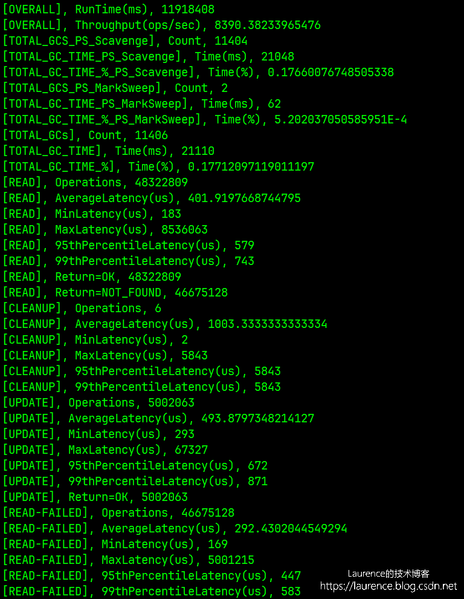
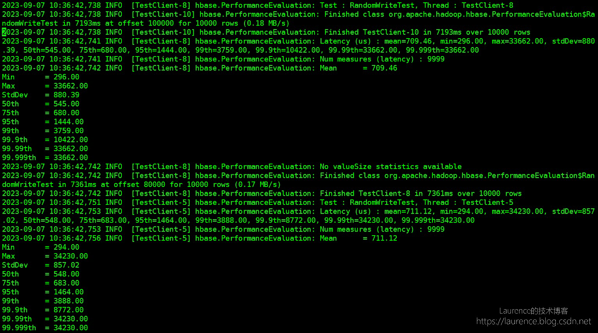

HBase主要性能压力测试有两个，一个是 HBase 自带的 PE，另一个是 YCSB，先简单说一个两者的区别。PE 是 HBase 自带的工具，开箱即用，使用起来非常简单，但是 PE 只能按单个线程统计压测结果，不能汇总整体压测数据，更重要的是，PE 没有 YCSB 的 预设模板（Workload） 功能，测试场景单一，相较而言，YCSB 要强大的多，它的 Workload 功能非常实用，可以模拟更贴近实际使用场景的压力状况。下面分解介绍一下两款工具的使用方法。
1. YCSB
官方文档： https://github.com/brianfrankcooper/YCSB/blob/master/asynchbase/README.md
1.1 全局配置
1
2
3
4
| hbaseYcsbUrl="https://github.com/brianfrankcooper/YCSB/releases/download/0.17.0/ycsb-hbase20-binding-0.17.0.tar.gz"
hbaseYcsbPkg=$(basename $hbaseYcsbUrl)
hbaseYcsbDir=$(basename $hbaseYcsbUrl ".tar.gz")
export YCSB_HOME="/opt/$hbaseYcsbDir"
|
1.2. 下载
下载地址： https://github.com/brianfrankcooper/YCSB/releases
1
2
3
| wget $hbaseYcsbUrl -P /tmp/
sudo tar -xzf /tmp/$hbaseYcsbPkg -C /opt
$YCSB_HOME/bin/ycsb -h
|
1.3. 建表
1
2
3
4
5
6
7
| cat << EOF | hbase shell
disable 'usertable'
drop 'usertable'
n_splits = 30 # HBase recommends (10 * number of regionservers)
create 'usertable', 'cf', {SPLITS => (1..n_splits).map {|i| "user#{1000+i*(9999-1000)/n_splits}"}}
describe 'usertable'
EOF
|
1.4. 加载数据
1
| $YCSB_HOME/bin/ycsb load hbase20 -cp /etc/hbase/conf/ -p columnfamily=cf -P $YCSB_HOME/workloads/workloada
|
上述数据加载使用的是方案/模板： workloada （就是一个properties文件），该方案默认写入1000条记录，并执行1000次操作（read，update，scan等），用户可以自定插入的数据量和操作次数，例如： -p recordcount=10000 -p operationcount=10000 。这里再详细说明 一下 recordcount 和 operationcount 两个属性：
1.5. 确认数据是否加载成功
1
2
3
| cat << EOF | hbase shell
scan 'usertable'
EOF
|
1.6. 选择压测模板（Workload）
上述加载数据的测试仅仅是一个“冒烟”测试，实际进行压测前，要根据目标场景选择一个相匹配的 Workload，当然，也可以完全自定义 Workload，以下是存放在 $YCSB_HOME/workloads 下的6种预定义的 Workload:
| Workload预制方案 |
说明 |
| workloada |
50% 读 50% 更新，读写均衡 |
| workloadb |
95% 读 5% 更新，读多写少，多数系统比较符合这种场景 |
| workloadc |
100% 读 |
| workloadd |
95% 读 5% 插入，读最近更新，越新的纪录读取概率越大（requestdistribution=latest） |
| workloade |
95% 扫描 5% 插入，小范围查询（重Scan），不是点查 |
| workloadf |
50% 读，50% 读取-修改-写入，即：读取一个纪录，然后修改这个纪录，最后写回 |
1.7. 正式压测
了解了上述不同类型的 Workload 后，选择一个符合自身集群使用场景的 Workload，然后就可以正式压测了，以下以 workloadb 为例：
1
2
3
4
5
6
7
8
9
| nohup $YCSB_HOME/bin/ycsb run hbase20 \
-cp /etc/hbase/conf/ \
-p columnfamily=cf \
-p recordcount=10000000 \
-p operationcount=10000000 \
-P $YCSB_HOME/workloads/workloadb \
-threads 3 \
-s &> nohup.out &
tail -f nohup.out
|
压测执行完毕后会给出类似下图的压测报告：

2. PE
PE只能统计每个线程执行的情况，不能统计整体的状态，所以还是推荐使用YCSB。
2.1 建表并执行测试
1
2
3
4
5
| cat << EOF | hbase shell
create 'test-table', {NAME => 'f', REPLICATION_SCOPE=>'1'}
EOF
hbase pe --nomapred --oneCon=true --table=test-table --rows=1000000 --valueSize=100 --compress=SNAPPY --presplit=16 --autoFlush=true randomWrite 16
|
PE的测试报告并不在控制台直接输出（这一点不太好），而是写入到了HBase的LOG文件，如果是EMR，会写到 /var/log/hbase/hbase.log 中，PE会分别打出每个线程的延迟状况，类似下面这样：

3. 附录
3.1. PE 命令行参数
1
2
3
4
5
6
7
8
9
10
11
12
13
14
15
16
17
18
19
20
21
22
23
24
25
26
27
28
29
30
31
32
33
34
35
36
37
38
39
40
41
42
43
44
45
46
47
48
49
50
51
52
53
| General Options:
nomapred 采用MapReduce的方式启动多线程测试还是通过多线程的方式，如果没有安装MapReduce，或者不想用MapReduce，通常我们采用多线程的方式，因此一般在命令中加上--nomapred来表示不使用MapReduce。
rows 每个客户端(线程)运行的行。默认值：一百万。注意这里的行数是指单线程的行数，如果rows=100， 线程数为10，那么在写测试中，写入HBase的将是 100 x 10 行
size 总大小,单位GiB。与--rows互斥。默认值：1.0。
sampleRate 样本比例:对总行数的一部分样本执行测试。只有randomRead支持。默认值：1.0
traceRate 启用HTrace跨度。每N行启动一次跟踪。默认值：0
table 测试表的名字，如果不设，默认为TestTable。
multiGet 如果> 0，则在执行RandomRead时，执行多次获取而不是单次获取。默认值：0
compress 要使用的压缩类型（GZ，LZO，...）。默认值：'无'
flushCommits 该参数用于确定测试是否应该刷新表。默认值：false
writeToWAL 在puts上设置writeToWAL。默认值：True
autoFlush 默认为false，即PE默认用的是BufferedMutator，BufferedMutator会把数据攒在内存里，达到一定的大小再向服务器发送，如果想明确测单行Put的写入性能，建议设置为true。个人觉得PE中引入autoFlush会影响统计的准确性，因为在没有攒够足够的数据时，put操作会立马返回，根本没产生RPC，但是相应的时间和次数也会被统计在最终结果里。
oneCon 多线程运行测试时，底层使用一个还是多个链接。这个参数默认值为false，每个thread都会启一个Connection，建议把这个参数设为True
presplit 表的预分裂region个数，在做性能测试时一定要设置region个数，不然所有的读写会落在一个region上，严重影响性能
inmemory 试图尽可能保持CF内存的HFile。不保证始终从内存中提供读取。默认值：false
usetags 与KV一起写标签。与HFile V3配合使用。默认值：false
numoftags 指定所需的标签号。仅当usetags为true时才有效。
filterAll 通过不将任何内容返回给客户端，帮助过滤掉服务器端的所有行。通过在内部使用FilterAllFilter,帮助检查服务器端性能。
latency 设置为报告操作延迟。默认值：False
bloomFilter Bloom 过滤器类型，[NONE，ROW，ROWCOL]之一
valueSize 写入HBase的value的size，单位是Byte，大家可以根据自己实际的场景设置这个Value的大小。默认值：1024
valueRandom 设置是否应该在0和'valueSize'之间改变值大小;设置读取大小的统计信息：默认值: Not set.
valueZipf 设置是否应该以zipf格式改变0和'valueSize'之间的值大小, 默认值: Not set.
period 报告每个'period'行：默认值：opts.perClientRunRows / 10
multiGet 批处理组合成N组。只有randomRead支持。默认值: disabled
replicas 启用区域副本测试。默认值：1。
splitPolicy 为表指定自定义RegionSplitPolicy。
randomSleep 在每次获得0和输入值之前进行随机睡眠。默认值：0
Note: -D properties will be applied to the conf used.
For example:
-Dmapreduce.output.fileoutputformat.compress=true
-Dmapreduce.task.timeout=60000
Command:
filterScan 使用过滤器运行扫描测试，根据它的值查找特定行（确保使用--rows = 20）
randomRead 运行随机读取测试
randomSeekScan 运行随机搜索和扫描100测试
randomWrite 运行随机写测试
scan 运行扫描测试（每行读取）
scanRange10 使用开始和停止行（最多10行）运行随机搜索扫描
scanRange100 使用开始和停止行运行随机搜索扫描（最多100行）
scanRange1000 使用开始和停止行（最多1000行）运行随机搜索扫描
scanRange10000 使用开始和停止行运行随机搜索扫描（最多10000行）
sequentialRead 运行顺序读取测试
sequentialWrite 运行顺序写入测试
Args:
nclients 整数。必须要有该参数。客户端总数（和HRegionServers）
running: 1 <= value <= 500
Examples:
运行一个单独的客户端:
$ bin/hbase org.apache.hadoop.hbase.PerformanceEvaluation sequentialWrite 1
|
3.2. 百分位数值（Percentile）：P99，P999
百分位数值是一个统计学中的术语，通俗一点解释是：把所有的请求响应时间按从小到大的顺序排列起来，排在某个 百分比 位置上的请求响应时间就是这个百分比对应的百分位数值。举个例子就是明白了：
P99 ：响应耗时从小到大排列，处在99%位置上的耗时即为P99值。假设该值为200ms，就意味着：99%的用户的响应耗时在200ms之内，只有1%的用户的响应耗时大于200ms
P99.9 ( P999 ) ：许多互联网公司会采用P99.9值，也就是99.9%的用户耗时作为指标，通过测量与优化该值，就可保证绝大多数用户的使用体验。 至于P99.99值，优化成本过高，而且服务响应由于网络波动、系统抖动等不能解决之情况，因此大多数时候都不考虑该指标。
参考资料：
https://hbase.apache.org/book.html#hbase_metrics
https://hbase.apache.org/book.html#offheap_read_write
https://help.aliyun.com/zh/emr/emr-on-ecs/user-guide/hbase-metrics
https://www.cnblogs.com/felixzh/p/10246335.html
https://cloud.tencent.com/developer/article/1596748